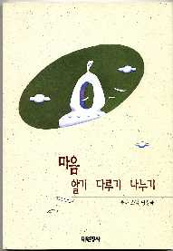
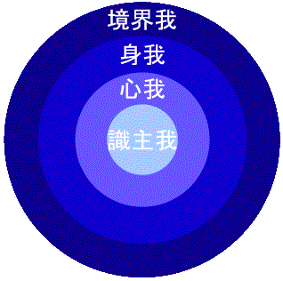

『心を磨く三拍子』 - 生活仏教から悟りに至るための方便 -
■ 目次 ■
第一部 幸福と幸福の条件
第二部 生活仏教、どうしたらいいか

龍陀 師 [著]
訳 ]
「正見」という最初のボタン
幸福の条件とは何か
これから私の考える幸福というものについてお話したいと思います。
幸福の条件として頭に思い浮かんだものを整理してみましょう。まず、富、出世、健康などあげられます。でも、その中には心に関連する言葉は見当たりません。自身の心のあり様を顧みずに幸福を求めているとしたら、真の幸福にはまだまだ遠いところにいると、私は考えます。何よりもまず自分の心の管理、つまり心を磨くということが最優先の課題であると信じます。
では心を磨くとはどういうことなのでしょうか。ちょっと太陽を思い浮かべてみて下さい。太陽そのものはいつも明るく輝いているのですが、時に雲にさえぎられて、あの燦爛とした光が私たちに届かない日があります。私たちの心もあの太陽と同様に元来光り輝いているはずなのですが、生きていく間には雨や雲が生じてこの心の光を覆い隠してしまうのです。この問題を取り除き、燦爛とした心の光を取り戻そうとする努力が、心を磨く、すなわち心を管理するということなのです。
雲を取り除くための善巧方便、つまり、うまい方法があります。、まず、重要な事は雲の有無に関わらず太陽はいつも明るく輝いているという事実を確信してしまうことです。すなわち、自分の心も仏の心と同じく元来は光りを放っているものであるということを信じることです。そう確信できる気持ちを土台にして心の管理を具体的に行わなければ、いかなる努力も幸福とは縁のないものになってしまいます。
また、他の人々との関係性の良いことも幸福の重要な条件として挙げられます。ある心理学者は、「人間が内的に不幸になるのは、その人が社会化する過程の中に誤りがあるからである。」と言っています。社会化する過程とは、人間関係の構築を意味します。子供の時からの親との関係、兄弟との関係、親戚との関係、先生との関係、友達との関係などがうまくゆかず屈折した場合、心は抑圧され、傷ついてしまいます。抑圧され傷ついた心は生来の光を失ってしまい輝くことができません。故に、自分と周りの人たちとの間に良い関係を保つということが幸福の必要条件であるということは、どなたにも解っていただけると思います。
幸福の決定的要因は思考方式である
幸福になるにも、必要となる原因があります。幸福とは、こころがある情緒の状態にあることです。情緒はひとりでに起きてくるものではなく、必ず何かの対象によって引き起こされます。たとえば、花をみることによって気分が良くなるし、友達から電話がかかってくることによって気分が良くなります。「気分がいいことはいいのだけれども、理由がわからない」というのは、理由がないからではなく、理由を見つけることができないからです。原因のない結果はありません。すべては共に関係することによって存在しています。そこで、幸福という結果を生み出す決定的な要因といえば、それは思考方式です。「情緒は思考から出てきます。その思考は自分で選択することができます。したがって、情緒も自分で調整することができるのです。」となれば、仏教でいう悟りや滅、解脱、妙覚などの最高の情緒も、思考を再調整すれば体験できるわけです。
シャカムニが悟った後、ルンビニーで５人の比丘に対して行った初めての説法は、苦・集・滅・道の四聖諦でした。私たちの心が苦しいという、その原因は集であり、その原因を滅すると苦がなくなる。この苦をなくす方法論が道です。この道には八正道という８つの方法があり、そのなかでも最初のものが正見であり、方法論の核心であり、道の本体となります。
この正見は存在論的正見と価値論的正見とに分けられます。ふつう、私たちはこの二つの形式で世の中を見ています。存在論的に見るというのは、対象を見ると「これは花である」、「これは本である」、「あの人は先生である」といった具合に何の感情もなくそのまま思考のみを適用することです。ところが、私たちはどうしようもなく価値論的に「あれは花だが、いくらするのだろうか」などと価格で換算してみたり、「きれいだなあ」と自分の感情を挿入して見てしまいます。存在論的に見ようと、価値論的にみようと、対象を正しく見るかぎりには幸福なのです。ところが、同じ対象をあるがままに見ることができずに、幸福を味わえなくなっているの人が多いのです。
自分がないのに苦がどこにあるのか
私たち人間は欲求を持っています。食欲、睡眠欲、性欲、安全欲、物欲、名誉よく、権力欲などなど数多くあります。私たちはこれらの欲求が成就されるとうれしいし、欲求が満たされずに挫折すると悲しくなります。ところで、「欲求が成就するとき幸福になる」というのは、実際には適切な表現ではありません。「欲求が成就したと考えると幸福の情緒を体験するようになるし、欲求が挫折したと考えると不幸の情緒を体験するようになる」という表現がもっと正確です。「欲求が成就したじゃないの」と他人から客観的事実を上げて述べられたとしても、自分の心の中でそれを認めないと、幸福にはなりません。「三億円ぐらいもうければ、成功したんではないの」とまわりの人がいったとしても、「いやいや、おれは十億円ほどもうけないと成功したとは思えない」と、みずから成就していないと考えるとしたら、けっして幸福であると感じることはありません。
衆生の心は、欲求が成就したと考えるとうれしいし、欲求が挫折したと考えると不快になるという、快-不快-快-不快を繰り返しています。それでは、どうしたら水準の低いせつな的幸福から水準の高い永続的幸福に上がることができるのでしょうか。
人間に欲求があるときには、その欲求以前に欲求する自分が存在するし、欲求の対象が存在します。自分と欲求の対象が存在すると考える限り、欲求しないということは難しくなります。シャカムニが明らかにしたのは、欲求の根になる主と客という実体が存在しないということです。これは、シャカムニが大覚を達成する前、死に対する不安につきまとわれていたが、この不安からどうしたら抜け出すことができるか思惟し、ついにみずからどこに引っかかっているのかをわかって導き出した法則なのです。シャカムニは出家した後もいろいろな外道のグルの下で修行し、高い境地にまで至ったのですが、死に対する不安まではなくならなかったのです。また、骨と皮がくっつくほどに苦行したけれども解決できなくて、再び元気を取り戻して菩提樹の下で３ｘ７=
21 日間にわたって瞑想をしてこの心理を悟ったのです。
まず、「私が死にたくない」つぎに、「しかしながら私は死ぬ」この二つの命題を同時に持っている自分を注視するようになります。「死にたくはないのだけれども、死ぬしかない」という矛盾を抱いているという自分を発見した後、この二つの前に「自分は存在する」ということが前提されているということがわかったのです。自分が存在するという大前提が、はたして正しいかを検討してみる必要があり、その問題を除外したままいくら枝葉の解決を図ってもしかたがありません。そこで、シャカムニは「はたして自分は存在するのか」と正思惟しました。こうして、「自分」という存在は縁起的構造により成り立っていることを悟ったのです。このように、「自分」というのは縁起的存在、すなわちさまざまなものの「関係性によってのみ」成り立っている存在であり、「自分」というものを主張するのは、あたかも、影をして実体であるというのと同じことなのです。
「縁起故空」です。大前提である「自分は存在する」というときの「自分」は、実体のない縁起的存在であり、したがって、空です。言い換えると「自分」という実体が存在しないというのは、すなわち主格がなくなるという意味で、したがって、死にたくない主体もなくなってしまいます。すなわち、我空を意味します。そして、世の中に存在するすべて、縁起的存在でないものはなに一つもありません。これが、法空です。シャカムニは、衆生は一様に「自分は存在する」「あなたは存在する」として、これに欲求が起こり、苦しみながら生きているのだと看破したしたのです。
価値観を正しく立てる
衆生というものは、持っている欲求が成就すればするほど、さらに大きな欲求を抱くようになります。逆に挫折すれば、そのために悲しくて憤怒し、憤怒すれば欲求がまた大きくなります。このような衆生の生き方を見て、シャカムニは自分も悟ったのだから、衆生も悟ることができるはずだとして、五人の比丘を中心にして４５年間にわたって法を説きました。
八正道の中で一番はじめに正見を説きましたが、まさに八万大蔵経は正見の森であるともいえます。たくさんある木の一本一本がすべて正見という木ですが、その中でも一番壮麗なのが
無我 という木です。無我というのは正見の中の正見です。我空とういう正見があるところには、欲求が立ち入ることができません。このような意識状態では、欲求が成就するか否かはなんの意味も持ちません。欲求の主体である自分が空なので、欲求の客体もやはり空にしかならず、すかっとした解脱を体験するしかないのです。
このように、思考を正しくするのが幸福のための必要条件なのです。正見という方便をのがして、他の方便に頼っているとすれば、それは枝葉にとらわれていると言わざるをえません。正見を現代語で表現するならば、正しい価値観、正しい世界観、正しい人生観などです。正見をきちんと立てえないと、その人生はまともにはなりません。命がきれるというのは、体一つだけの問題ですが、価値観が間違うと魂が壊れます。来世にわたって、その壊れた魂の因果を受けなければなりません。
心の管理をどのようにするか、これはすなわち、正見をどのようにきちんと立てるかということに集約されます。私たちはそれなりの見解を持っています。今日、多くの仏教は、活きた仏教として成り立っているというよりは、観念仏教、死んだ仏教、頭の中だけの仏教としての価値観になってしまっているのではないでしょうか。この瞬間この場、これがすなわち活きるための道であり滅にならなければなりません。この時、この瞬間が滅であり、自分のたちいふるまいの一つひとつが道になるのが活きた仏教です。観念的に頭の中にしまっている仏教から抜け出しましょう。
肯定することなしには超越できない
解脱は遠くにあるのではない
意識を線分で表現したら、不幸の極点から解脱の極点まで、無限に段階分けすることができます。ここでは表現の便宜上、三分してみます。つまり、不幸、幸福、解脱とわけるわけですが、欲求が挫折したと考えると不幸を感じるし、欲求が成就したと考えると幸福を感じ、欲求を手放すと解脱を感じます。
仏教徒が目指すのはやはり解脱の方向の極点である妙覚です。この妙覚に至るにはいっさいの欲求を捨てるといいます。もちろん、正しいことです。しかし、人の修養水準や根気、気質などを考慮しないで、無条件すべての人に「貪心（たんしん＝欲深い心）を手放せ、無情、無我ではないか」と要求しても無理というものです。
人はだいたい誕生から死に至るまで「欲求-挫折-憤怒-欲求-挫折-憤怒」の悪循環をしています。この過程で欲求、はさらにし烈になり、瞋心（しんしん＝自分の気持ちと異なるものに対して怒る心）はいっそう深刻になります。欲求が成就したら喜びを感じるとしても、成就するまでに持ち続けた緊張感というものは不愉快な情緒であるところの憤怒を増殖してしまいます。のみならず、成就しても、その喜びと同時に次の成就のための新しい緊張が始まり、もっと大きな欲求が再び生まれてくるのです。
このように人生というのは貪と瞋のどろ沼から抜け出せない状態にあるのが普通です。貪、瞋は「自分は存在する」「自分は不満足な状態にある」「自分は愛されなければならない」「自分は認められなければならない」などの間違った思考、すなわち痴を前提にしています。この貪、瞋、痴の三毒を徹底的に除去しなければなりません。貪、瞋の根である「自分が存在する」などといった間違った見解をなくすために、空、無我のような存在論的制限が要請されるようになったといえます。
知足する
しかし、欲求挫折の歴史を繰り返しながら生きてきて、積もりにつもった無意識下の貪と瞋は無条件「空である」「無である」という超越論的な説法だけではなくなりにくいものです。妙覚に至る主波羅密、すなわち中心的な実践としての禅や念仏その他の修行に専念する以前に、あるいは、そのような主波羅蜜に専念していたとしても、貪と瞋を緩和する作業が助波羅密（補助的実践）として要請されます。方便は無数ありますが、ここでは、知足という方便をひとつの助波羅密として取り上げてみましょう。主と助の方便は決まったものではなく、意識の勉強をする人が選択すればよいものです。
知足、すなわち足を知る。満足することです。『法句経』に知足最富という言葉があります。満足することが一番お金持ちだということです。人は現在すでにあるもの、これまでに成し遂げたものに満足できなくて、まだないものや成し遂げていないものを求め、達成しょうとすることに執着することによって、苦しみのどろ沼にはまっているのです。
既存既成を味わい楽しむこと、凡事に感謝すること、これが知足です。知足の意味を分からない人はいないだろうし、知足の重要さをわからない人もいないでしょう。知行一致するのが難しいように、知足の重要性は知っていても知足することを身に付けている人は少ないのです。
解脱とか救済、超越などといったたいそうな題目を掲げなくても、世の中の人がこと知足という徳目一つだけでもある程度わかれば、一般的な意味の幸福は保証されるのです。不幸というのはだいたい「ないもの」「成し遂げてないもの」に対する極端に偏った緊張感と、成し遂げていないことによる失望感を意味するものです。知足の態度は現在すでにあるもの、成し遂げてきたものに十分に満足することで、これが幸福といえるのではないでしょうか。これがまさしく応無所住を実践する最初の段階でしょう。
八万大蔵経や小乗大乗、仏法を一言で言うと『金剛経』の応無所住而生其心なのです。「心が一切とどまるところがないので自由であり、その自由な心で日々の生活を送る」、それがすべてではないでしょうか。知足すると、いっさいのことに満足するために、心にストレスが発生するこもありません。曰く応無所住です。なんとも大きい徳目です。
このように、知足を『法句経』のある片隅にある一つの単語にすぎないとして見過ごしてはいけません。知足哲学は教典の様々な場所で表現されていますが、重大な（八正道の）正見徳目の一つとして、あまり注目されていないのが残念です。知足は、このように現在の幸福を保証するだけでなく、過去に知足できなくて積もってきた貪瞋痴の三毒を溶かしてしまういい方便です。
それでは、猫の首に鈴を付けておくと便利でしょうが、どのようにしてその鈴を付けることができるでしょうか。多くの聖者たちの教えが、衆生には程度の差があるものの、猫の首に鈴を付けるような、あるいは絵に描いた餅のような現実性のない空理空談になっています。知足！その重要性をいくらわかっていても、知足する人格にならないと意味がありません。それでは、どうしたらいいのでしょうか。観行、すなわち内面化のための瞑想が必要です。
知足瞑想
知足の観行はどういうふうにするのでしょうか。その方法論はたくさんあります。一つ提案してみます。知足瞑想は一人で入る時には参禅のようにして、他の人といっしょにいる時にはスピーチ式にします。
知足瞑想、すなわちここでは感謝瞑想とも言えますが、自分の認識主体が認識客体に対して「…が～なのでありがたい」というふうに言ったり考えたりするのです。認識客体というのは自分自身をはじめ宇宙に存在するすべてのものなので、自分の心を原点にして、心、体、機能、業績、家族、近所などの人々、それから家庭、環境、社会、国家、国際社会、森羅万象、太陽系、銀河系などと同心円的に広げながら肯定瞑想をしていきます。瞑想文を事前に作成しておいて、読みながら瞑想生活をするのもいいでしょう。
この中で、一番大切なことは「自分」であります。自分に対する正体概念があいまいであったり、自分に対する価値評価がよくなかったりするのがすべての不幸の種です。正体観があいまいで、自我概念が低い人はすべてのことに主体性がなく、優柔不断で、劣等感が強く、ゆううつ症にとりつかれています。その次に重要なものは、頻繁に会う周りの人に対する友好感です。人生は人と出会う過程だとも言えるので、人に対して否定的に感じる観点が強いと、いつも人のせいで気分が悪い不幸な生き方になってしまいます。したがって、自分と他人に対する肯定瞑想を強力に実施して、愚かな思考方式すなわち「痴」を矯正しなければなりません。
肯定瞑想は自分の心から始めるのがいいでしょう。場合によっては、近い人である夫とか妻、子供、友人を対象にして、あるいは、物を前に置いて感謝することを発見してみるのです。
肯定瞑想の要領
1) 心に対する肯定瞑想
心は宇宙とも代えがたいほど貴重であると瞑想する。
心の無限の可能性を瞑想する。（無限の喜びの可能性、無限の知恵・慈悲・力の可能性、見たり聞いたり考えたり感じたりできる可能性など。）
心の超次元性、すなわち、解脱性を瞑想する。そして、心が仏であると信じ、神性や仏性を他に探さない。
2) 体に対する肯定瞑想
自分が生きていることを肯定的に受け止め、その根拠である肉体に感謝する。
頭から足先まで、頭、目、耳、鼻、口、皮膚、腕、手、足、胸、肺、腹、胃腸、小腸、大腸、肝臓、心臓、すい臓、ひ臓、大脳、小脳、間脳、脊椎、神経、毛穴などなど可能なかぎり詳しく観察して、その機能の神秘を賛美し、健在であることを感謝する。
3) 業績に対する肯定瞑想
「自分は名前を書ける」「自分は 3x7=21 であることを知っている」のような極めてさ細なことを業績として認識することが重要。
そのさ細なことに対して不動の価値を付与して、自分が成し遂げてきた大きなことまで、詳しく洞察瞑想して自我概念を高める。
業績面で、自分よりも大きな業績を成し遂げた他人と比較、評価して、相対的貧困感を感じることは禁物。相対評価はさけて絶対評価をするようにする。たとえば、100 を指向目標として決めたとしても、それに執着しない。もし、執着数位を 0 に置いて生きることができるとしたら、それはすなわち、道人の生き方である。このような人の日々はめでたく、瞬間瞬間が喜びである。
4) まわりの人についての肯定瞑想
人の肯定瞑想はまず、友好感の大きい人を対象にするのがいいでしょう。その人を思い浮かべて静かにしてみます。そして、その人に対する自分の心の動きを追ってみます。これはとても自然な流れです。人によって多少の差があるでしょうが、共通する部分がたくさんあります。
その人に会って、一番最初に起きる思いは「こんにちは」というあいさつではないでしょうか。できるだけあいさつはまごころを込めて行います。自分が向かい合っているこの人を仏陀であるとして、宇宙のように貴重な存在としてみて、ていねいにおじぎをします。
最敬礼をしていると、自然にお祈りが出てこないでしょうか。「○○さま、幸せでありますように。健康でありますように。念願がすべてかないますように。心が大きく自由になり、まわりの人たちに愛を振りまく人になられますように」というように心を込めて、可能な限り具体的にお祈りします。
そうすると、感謝の気持ちが沸いてくるのではないでしょうか。生まれてから今まで、その人がまわりの人に喜びと益を与えたことについて具体的に思い浮かべるし、もしわからなければ想像して感謝します。
次には、その人の存在自体の神聖さに対する賛嘆が出るのはないでしょうか。その身体の神秘、目、耳、口、などなど体の多くの器官と組織の神秘を吟味し、賛嘆します。とくに、その人の魂の神秘はどんな修飾語を付けて賛美しても余りあります。
人に対して肯定瞑想するための素材は、このほかにもいくらでもあります。できるだけたくさんの人を対象に実施しましょう。
また、静かな瞑想ではなく、できる限り大きな声を出して行ってみてはどうでしょうか。
5) 森羅万象に対する肯定瞑想
電気、電話をはじめ数多くの文化文明の恵みに対して、また、水、空気、草、木、山、海などの大自然にまで、太陽系から銀河系に至るまで、重々縁起する大秩序のパノラマを綿密に感じながら感謝します。たとえば、「阿弥陀仏」一つを唱えることに専念している修行者でも、そのエネルギーの十分の一でもこの肯定瞑想にそそぐとしたら、修行の能率が倍加するでしょう。
あらゆる宗教人は、「肯定の基盤が弱いと現在の幸福はないし、超越への地平が開かない」というということを認識して、個人的、集団的、社会的に肯定視覚を広げていく運動をする必要があるのではないでしょうか。
瞬間瞬間に目覚めていなさい
目覚めていると平和を失わない
目覚めていると平安を失いません。目覚めていればいるほど、思考も明晰になります。目覚めているということは、いろいろな意味がありますが、貪瞋痴の三毒に巻き込まれていない心の状態と見ればよいでしょう。友人の誕生パーティーに招待されなくてさみしくなったのは、「目覚め」という次元から見れば幼稚なことです。誕生パーティーに招待されなかったという事実を知った瞬間、目覚めている人は「そうなんだなぁ」とします。すなわち、「友人が誕生パーティーに自分を招待しなかったなぁ」と、事実をそのまま眺めて見ます。「眺めてみる力を養う」というのは修行の重大なポイントです。この力が弱い人は自分が積み重ねてきた三毒のカルマに意識が振り回されてしまうのです。
瞬間、怒っても、さみしくなっても、その瞋心が起きるようになった状況に立ち返って、「眺めてみる力を養う」勉強の素材にしてしまうならば、一挙三得のもうけになる。過去のカルマを浄化する利益、未来のカルマを少なくする利益、目覚めている力の弾力を得る利益、これら３つの利益です。
貪瞋痴の除去が仏教の道であり、目覚めていようとすることが仏教なのです。瞋心が起きたときには、そのままほうっておいてはいけないのです。それを自分の修行の材料にしなければなりません。 「こりゃなんだ」という公案一つだけ、「阿弥陀仏」一つだけを主波羅密として大事に抱えているだけでいいという、曖昧でばくぜんとした幻想の中にいる修行者が少なくありません。もちろん、主波羅密を一生のテーマとして心の真ん中に持っていることはいいことです。そのうえで、より効果的に主波羅密に没入するためにも、境界、すなわち世のわずらいに意識が巻き込まれてしまうということを少なくしなければなりません。そのためのいい方便が瞬間瞬間に「そうなっているんなんだなぁ。なにか事情があるんだろう。ありがたいことだ」という意識をまず持つようにするこです。
「だなぁ。だろう。ありがたい。」の実践
「私が部屋の掃除をしたのに、姉がもう一度、掃除し始めた。腹が立った。」の場合
だなぁ
: 「姉が掃除をするんだなぁ。」としながら、「だなぁ。」の力、すなわち、眺めてみる力を養う。
だろう
「部屋の掃除が終わっているのを知らないのか、知っていたとしても姉が気に入らなかったといった理由があるのだろう。」としながら、「だろう。」の力、すなわち、正思惟の力を養う。
ありがたい
「『これでも掃除したの？』とか『なんなの、もう一度やりなおし！』というように神経質的に言われないだけでもどんなにありがたいことか。」としながら、肯定視覚の力を養う。
「友人が誕生パーティーに招待してくれないのでさびしい。」の場合
だなぁ
「私を招待してくれなかったんだなぁ。」
だろう
「そうせざるをえない事情があるんだろう。」たとえば、忘れたか、手違いで自分の名前が入らなかったか、自分に案内が届かなかったか - などの事情があるのだろう。
ありがたい
「クラスの全員を招待して、自分だけ招待しなかった場合に比べると、この状況は感謝したいぐらいだ。」
「夫に、『おまえの実家の人はみんな教養がない』と言われて、くやしい。」の場合
だなぁ
「夫が『おまえの実家の人はみんな教養がない』と言うんだなぁ。」
だろう
「私の実家に失望したことがあったか、気に入らないことがあるから、怒っているんだろう。」
ありがたい
「くそみそに言われたり、暴力をふるわれたりしないだけありがたいことではないか。」
このように、みなさんが今まで生きてきながら経験したつらい状況と楽しい状況の事例を心の勉強の素材として活用するのは楽しいことではないでしょうか。 「だなぁ。だろう。ありがたい。」これは、いろいろの波羅密の中で選び出した一つの方便です。日常生活のあらゆる場面で活用してみましょう。
実践が修行の道
瞋心が起きた状況を 100 回ぐらい瞑想的に「だなぁ。だろう。ありがたい。」実践してみると境界を受容する力が驚くほど養われます。じっさい、境界にひっかかって心が傷ついたのが不幸の半分以上ではないでしょうか。まず、逆境界受容が重要です。これがある程度解決すると、心の勉強の基礎が造られたと言えます。その人の口から、その人の心から不平不満が無くなったことを想像してみてください。どんなに美しいことでしょうか。
「だなぁ。だろう。ありがたい。」を実践するには、まず、やさしい素材からたくさん取り組んでいくのがいいでしょう。いつかの釈迦誕生日に、この「だなぁ。だろう。ありがたい。」の法話をしたことがあります。二、三日後、ある女性信徒から「先生、『だなぁ。だろう。ありがたい。』をしたら、よけい心が傷つきました。」という電話がかかってきました。痴呆症の母の下をきれいにしながら、「お母さんが、おむつをぬらしたんだなぁ。」としてみたところ、心がもっと痛くなったというのです。当然のことです。初めは、しやすい素材を選択します。しかし、素材が難しいとしても、より深く「だなぁ。」を何回も繰り返してみると、だんだん、境界は自分の心とは切り離された関係のないこととして、遠く離れて「だろう。」の理解の幅が大きくなります。そして、「ありがたい。」においても、それよりももっと悪い状況に比べるとはじめは無理なような抵抗感があるが、やってみると自然にありがたいという気持ちが自然に沸いてきます。
私たちの魂は、底の底から絶叫しています。「悟りたい。」「平和に暮らしたい。」というふうに。「だなぁ。だろう。ありがたい。」は、この絶叫に応じたものです。実践するしか道がありません。「だなぁ。だろう。ありがたい。」を深く考察してみると、一つひとつが自然な流れとして繋がっていることがわかります。何かわからないときは複雑に見えても、わかってみると簡単だと言えます。この「だなぁ。だろう。ありがたい。」が修行の全てだとするほどの体験を得るでしょう。 読書のみなさんの中から、「先生、『だなぁ。だろう。ありがたい。』を百回以上やったら、もう境界から自由になりました。」という手紙を
3 通ほどもらったら、本当にうれしくなるでしょう。飛んでいって励ましてあげたくなります。
足かせに気がついたら、それを切れ
毒杯をいま飲むことができるか
わたしが 20 年間にわたって開いてきた意識成長のためのワークショップ「同事摂」の終盤部では、超越瞑想というのがあります。超越瞑想の理論的な脈絡は前の章で説明した「だろう」に該当するし、肯定瞑想は「ありがたい」に該当します。超越瞑想では、ワークのひとつとして「今、あなたの前に毒杯があります。飲むことができますか」という課題を与えます。すなわち、死ぬことができるかということなのです。もちろん、死ねると答えることは簡単ではありません。ですが、驚くことに、この毒杯瞑想を長くやっていくうちに、「毒杯を飲める。」という答えが出始めます。瞑想時間が終わるころには、過半数の人が死ねる心の状態になります。すぐにはなっとくできないでしょうが、ふしぎに人間の心というのが解放されうるのです。
想像してみてください。死ねるという心の状態に至ると、どんなにスカッとするでしょうか。いつでも死ねる心の状態で世の中のことに取り組むならば、なんでもとらわれることなくできるでしょう。
仏教人は「応無所住 而生其心」(まさに住するところ無くして、しかもその心を生ずべし) を口先だけのものにするのではなく、生活仏教としてこれをを実践しなければなりません。執着しないことである無所有を妨げている自分の足かけに直面し、それを切断することです。
「死ぬことができるかと」いう質問によって浮かび上がる「死ぬことができない」理由、これがすなわち自由になることを妨げている足かせなのです。この足かせをもっとはっきりと見て、断ち切る論理を瞑想をしなければなりません。解脱、解脱としながら一日一時間も瞑想しない宗教人が多いのではないでしょうか。
このような超越瞑想をするときに、死ねない理由をノートに記録して、正思惟をしながらそれを切り捨てること、それがすべてです。７歳の一人息子を置き去りにして死ねないとする場合でも「私がいなくても育つだろう。」という論理が展開されると「息子」というものにつながっていた頑強な足かせも切ることができるでしょう。このように息子に対する足かせが切れて、息子から自由になった状態で、息子に対する義務と愛を尽くすのが、すなわち息子に対する「応無所住 而生其心」なのです。
生命自体が否定される死を選択する道がどうしても受け入れられなかったとしても、生死に対する新しい意味を開いて正思惟の深さと鮮明度を大きくしていくと、ついには死さえも受け入れることができる心の状態になります。この死の瞑想を実践してみてください。場合によっては集団的に瞑想の時間をもって、現在の心の状態をシェアしてみるのもいいでしょう。人間誰でも一度は死ぬ。平素、死の瞑想を通じて心の鏡を磨く必要があるでしょう。
ある信徒がガンでなくなったのですが、無くなる前に息子の手を取って「もうあと３年だけ、生かしてちょうだい。」と、必死に頼んでは息子を苦しめたのです。本当につらいことです。死に対する不安を整理できないまま死んだ魂は、どうなるのか考えてみるとよいでしょう。
不治の病の患者に死の瞑想を指導するプログラムを病院とか家庭で開設するのがよいと思います。死の瞑想は自己成長のためのいい手段であり、生の瞬間瞬間における大きな功徳になることでしょう。
死の瞑想！ これはひとつのいい助波羅密です。肯定瞑想、超越瞑想なども助波羅密として活用するのも効果的な修行の道になるでしょう。
登山の目的がかならずしも頂上にまで足を運ぶことが目的ではないように、すべての瞑想が極みに達しなければいけないということはありません。死の瞑想も、その過程で自分の中の意識的であろう、無意識的であろう、潜在している足かせを探り出し、直面してみるそれ自体によって、自分の魂の浄化になります。
「する事ができる」心理と自由さ
次の話は、数年前に実際にあったことですが、みなさんがその主人公になって体験してみてください。昔の弟子に出会ったのです。彼は息子と娘がいて、大学教授として裕福な生活を送っていました。いろいろな話をしているうちに、話題がこころの勉強の方に移って、こころの自由さ、慈悲などに焦点が移りました。彼はあれこれ超越して平和なこころで生きれたらいいなあといいました。私は「本当に超越したいの」と聞くと、彼は「本当にそうです」と答えました。「そしたら、超越するために具体的にどんな努力をしているの」と聞きました。口では解脱を言いながら、実際には努力をしない人がほとんどなので、私は慈悲心を出して、彼の超越を具体的に手伝ってあげようとしたのです。「そしたら、今、この瞬間、超越を体験してみたらどう」と言ったところ、彼は「ハイ」と答えました。「ここにかみそりがあるのだけど、誰でも坊主になりたい人はいつでも切ってあげるよ。さあ。君はこの瞬間、坊主になれるかな。今すぐ、答えなくてもいいから、じっくり瞑想してみなさい。」
このとんでもない課題に、彼は当惑、不安、新鮮などの奇妙な情緒体験をしながら、「断髪瞑想」に没入するようになりました。断髪瞑想の中で、３つほどの足かせが見つかりました。妻の小言、同僚と学生たちの好奇のまなざし、頭にある醜い傷などです。このように、なんでもないようなことが、知らずしらずに私たちの自由さを抑えているのです。
けっきょく、彼は断髪できるようなこころの状態になり、そのような超然とした体験をできたことに大いに感謝してくれました。
顔にほくろ一つあることで、一生コンプレックスを持つのが衆生の心ではないでしょうか。私たちの情緒が、なにやかやで平穏でないというのが苦なのです。この苦から抜け出して楽を得る、すなわち離苦得楽するのが仏教であり、宗教ではないでしょうか。頭にある傷を人に見られると気になるのが苦であり、他人にきれいな頭と認められたい思いが貪なのです。頭の傷を隠すことで苦から逃れようとするのではなく、「～されたい」という足かせを切り捨てて楽になるのがもっと生産的です。この「～されたい」という思い一つを取り除きさえすれば、頭の傷など問題にならなくなります。
自分の頭の傷を隠したいというのは、あたかも、障害児を持つ母親が人の前にその子を出したくないと思ってしまうのと同じ心理です。前述の主人公は「傷は私の一部なので、受容する」という自己転換をして、傷の足かせを切り放つことができました。これも、立派な瞑想の結果ですが、根本的な解決は、「～をしたい」という貪の根本である「私は存在する」という自己を実在視する思考を捨てることです。
とにかく、「～をできるか」という課題の助波羅密瞑想はこころの勉強をする人の解脱度を高める奇抜な方便の一つです。「ああ。そんな瞑想法もあるんだなあ」と、知識として頭に入力するにとどまるのではなく、妄想したり雑談する時間の一部を割愛して、真剣かつ厳粛に「毒杯をあおることができるか」「断髪できるか」「ひとり山中で30年生活できるか」「無条件“ハイ”と返事できるか」などの主題をもって瞑想してみてください。実際にやってみれば、この方便がとても効果的だと納得でき、その深さと味を体験できます。解脱とは、漠然としたままで貪瞋痴から抜け出すことではなく、瞬間瞬間これに直面することにより、抜け出すことなのです。
私とは何か
「私」を正しく知ることが悟りの鍵
「私、わたし、ワタシ、」「私のもの、自分のもの」と言いながら生きるのが人生です。「私」と言いながらも自分を知らないで生きるのは残念なことですね。何が私なんでしょうか。なにが、正真正銘の私なのでしょうか。よくよく考えてみる必要のある主題ではないでしょうか。それなのに、この主題が、あまりにも無関心なままなおざりにされているようですが、どうしてでしょうか。
では、なにが「私」なのでしょう。この身体、あるいはこの心をもって「私」であると言えるでしょうか。だいたいそんなところで、“決着”してしまっているのが普通です。これまで長いこと「私だ」「私のだ」と限りなく繰り返して、骨までしみわたってしまった我執、法執を洗い流さないかぎり、解脱はありえません。
釈迦が示した解脱するための方法のひとつが「私」を正しく理解することです。「正しく」というのは科学的な厳正さを意味するのではなく、方法として、それにいかに真剣に取り組むかということを意味するものです。
「私」というものが何であるかを知ることが目的ではありません。「私」というものに対する執着があるがゆえに苦をこうむっている。だから、「私」というものをよく理解することで、「私」に対する執着から脱却することが目的です。つまり、執着を捨てるための方便として、私に対する正しい理解が必要になるのです。これが、知ることを目的とする学問と異なる点です。
さて、何が私なのでしょう。わたしが２０年にわたって開いている「同事摂」ワークショップで、ワークが極まってくると、「あなたは何ですか」「何が、本当のあなたですか」と、真剣かつ厳粛に問いかけるワークに取り組みます。「五右衛門です」「○○の親父です」「○○の夫です」「○○グループの社員です」「日本国民です」「身体です」「魂です」などなど、これというものがわんさと出てきます。ところが、答えて出したものが本当に私なのかと自問してみると、「あれこれ考えるに、それが私であるとはいえない。いったい、何が私なんだろう。」とさらに問わざるをえなくなります。
この主題に対して誠実に取り組んでいようとすると、だいたい“知ることができないという焦燥感”におそわれます。このような状態を密度高くしていくのが、禅の公案であり、この焦燥からの突破口を探して前進し、みずから満足できるような回答を得て修行していくのが念仏禅であり、法界観、一心三観などの行法です。
「本当の私」ではないものを次々に取り除く瞑想
本当の私を探求するために、一般化してもよさそうな方便をひとつ紹介しましょう。本当の自分ではありえないと思えるものを次々と取り除いていく瞑想です。だいたい、普通の人が「私」というものを分析してみると、４層に分析できそうです。見たり、聞いたり、考えたりする認識の主体（識主我）。こころ（心我）。からだ（身我）。そして、自己同一視している“私のもの”（境界我）。図にすると次のようになります。

本当の私を探して、外側から「これは、はたして私だろうか。」と問い直してみましょう。タマネギの芯を求めて一枚いちまいはがしていくように ...。
境界我。私たちが知らず知らずのうちに自己と同一視して、執着している、身体の外側のものです。父母、兄弟、子供、夫、妻、財産、土地、大事な物、名誉権力などなど、大事な（?）私の境界我。それらが私でしょうか。そうでないなら、はなしてしまいましょう。抱え込むのをやめましょう。子供は親の手元から離したほうがよく育つともいいます。財産は離してしまったほうが、効果的に管理できます。
身我。これが私でしょうか。身体というのは、よく調べてみると、顕微鏡でしか見ることのできない父親の精子ひとつと、毎月母親の卵巣から出る卵子ひとつ、そして、母親が私を宿して１０ヵ月の間に食べたご飯やたくわん、私が生まれてからずうっととってきた食べ物、それらの集合が身体です。精子が私でしょうか。卵子が私でしょうか。ご飯やたくわんが私でしょうか。このようなものを「私だ」として、しがみついている人を見るとかわいそうになりまりませんか。身体。これ、私ではありません。放しなさい。明日、あさってにも火葬場で煙と一にぎりの骨になってしまうこの身体。放してしまいましょう。
心我。これが私でしょうか。心我とは思いと感情の組み合う過程に過ぎません。思考、感情、欲求、意志。これらが現象として繰り返し現れては消えていくのが心です。花いちりん見る（認知作用）、気分がいい（感情）、つんで持ち帰り花びんに生けたい（欲求）、つみ取ろう（意志）。日ごろ、心はこんなぐあいに活動しています。いったい、この思考が私なのでしょうか。違います。その瞬間に起こった思考現象にすぎません。感情、欲求、意志も同じことです。心というものも、よくよく考えてみるとなにか実体があるというものではなく、実体のない“機能”が乱舞するだけです。
識主我（認識の主体）。山が見える。何か見る主体があるから、それが「山を見る」のではないかと考えそうです。この考えが、アートマンという形而上学の概念を作り出しました。木があり、石があるのなら、それを創った者がいるのではないかという考えがブラーフマンという形而上学的な神を作り出しました。釈迦が歴史に書き記される意味は、その二つの形而上学的概念から抜け出したということにあります。
鳥のさえずりが聞こえる。そのさえずりを聞く何かがあるのか。ちがいます。主体的に役割を果たしているかのような機能があるだけで、主体自体は実際にはありません。アートマンとかブラーフマンと同じように、知ることも体験することもできない形而上学的概念を、想像の観念倉庫に設定しておこうというのは、思索が徹底されていない“信じ込み”心理です。信じ込んでしまうことにより、なんらかの欲求を成就し、安らかになろうという心が人間の信じ込み心理です。
この信じこみ心理が、人間にとって有益な道具になっていることも事実です。信じこみ心理がないと、橋を渡るたびに異状がないか点検しなければならず、人に合うたびに凶悪犯ではないかと用心しなければなりません。多くの宗教教理が信じ込み心理を前提にしています。解脱に至らないとしても、信じ込みによって得る功徳は非常に大きいものがあります。しかし、なんでも中道がよく、状況によるべきものです。なんでも信じないということも禁物であるが、なんでも信じ込んでしまうのも禁物です。世の中のほとんどの人が、あまりにも深く、こうむっている心理被害が一つのが“私は存在する”という信じ込みです。
“私は存在する”という信じ込み。これは人の成長過程で段階的には必要ですが、最終段階の成熟過程では、その堅い信じ込みを放してしまわなければなりません。釈迦が菩提樹の下で修行したのはまさにその過程でした。その当然かつ自明でもあるかにみえる「私」というものが、実際は縁起的機能にすぎないことを看破し、それまで引きずっていた不安、つまり一切苦厄がなくなってしまったのです。
“真の私”うんぬんもやはり観念の虚像
それでは、最後まで“私”として残っている認識の主体である識主我も、私ではなく、単なる（実体のない）機能であることを照見したときに、どのようなことが起こるのでしょうか。それこそ、自由感であり、解放感、大慈大悲、あふれる生命力ではないでしょうか。「山は山であり、水は水である」、妙有、常楽我浄の四徳があふれるような状態ではないでしょうか。空と性と相が一如となって現前する阿弥陀仏の一心法界が、これであるということを瞑想の深みに応じて理解できることでしょう。
ひょっとして「なにか、気が抜けるようだ」と考えますか。そうかもしれませんね。老人ボケのしゅうとめを３０年にわたって看病した末に亡くなったのだが、なんともさみしく感じたとのことです。観念的に思索しないで、瞑想的に観照してみると、思索の過程で起きるある種の虚脱感は極めて一時的です。瞑想の深みと比例した充満感が感じられるはずです。「ああ、それじゃ、最後に体験するその自由感などが本当の私なんだな」と結論を下したくなりましたか。しかし、自由感などは絶えず流れているものなのです。その絶えず流れるものに、またしても名前をつけようとするものではありません。“真我”であろう“本当の私”であろう、名前を付けようとする“信じ込み”心理が働いている可能性があり、目覚めていなければなりません。
世の中で名人と呼ばれるようになるためにも、骨身を削る努力をします。解脱者という世間ごとを越えた名人になろうとしているのに、わずかの努力で到達できるでしょうか。釈迦の遺言に「なまけることなく、精進しなさい」とあります。この一言に込められた釈迦の切なる悲願と慈悲の心がどれほどのものであったか、思えば思うほど胸が熱くなります。南無阿弥陀仏。
言葉でする心の分かち合い
言葉ひとつで千両の借金を返す
人間は社会的動物です。人との関係なしに生きることはできないというのが、この世の中です。関係がよければこそ、幸福で、ことがうまく運びます。家庭内の人間関係、職場内での人間関係、親戚どおしの人間関係、師と弟子との人間関係、国家間の人間関係、人種間の人間関係などなど、関係、関係、関係！ 世の中は関係のパノラマです。関係哲学をもっと押し進めていくと、世の中で他のものと関係することなしに存在することができるものはなにもないということになります。
人間関係はふんいき、表情、行動、言葉、関心を通じてなりたちます。ふんいき、表情、行動、言葉、関心、これらはみな高い徳性を求める際の重要な概念です。同事摂ワークショップは、このような包括的な関係性が互いにぶつかり合い、助け合い、補完し激励しながら進行します。各参加者が、どれほど瞬間瞬間の主題にまじめに取り組むかが場の成熟度を決定します。もちろん、このことはワークショップの場だけではなく世の中についても言えます。
同事摂ワークショップでは、いろいろな関係性の中でも言葉について集中的に取りあげます。韓国には「言葉ひとつで千両の借金を返す」ということわざがありますが、逆に言葉ひとつで千金を失うこともありえます。言語表現いかんで、家庭の和、不和が決まってしまうという例はいくらでもあります。言葉とは、心が音声を通じて表に出てくる現象です。つまり、言葉の交流は心の交流、こころの分かち合いです。「心の分かち合いをどのようにして効果的にするか」が、二人以上の人が住む世の中では常に重要な課題とならざるを得ません。
言葉は口から出た瞬間に、死活を決定します。一生を通じて、自分の口から出た言葉で多くの人が死んだり、活きたりしているのだということを知る必要があります。今日の一時間の学習でもって言葉の習慣を一つ矯正しておくことが、一年後の万金の不渡りを防ぐことができ、十年後には死んでいるはずの人も生かすことができます。
殺、盗、淫、妄、酒を禁じた五戒のうちで、どの戒が一番比重が大きいでしょうか。不妄語です。特殊な場合をのぞいて、殺生や盗み、邪淫、飲酒をしてどれほどの問題になるでしょうか。それよりもひんぱんに問題になるのが言葉です。言葉一つで幸、不幸を決めてしまいます。夫の一言が妻の胸中に十年にわたるつっかえを創りだし、友人の二枚舌一言が両者の縁を切ってしまいます。こんな例は世の中、いたるところで起こっています。正語、不妄言、浄口業真言をいつも唱えるわけにはいかないとしても、一生にわたって使う言葉なのですから、磨きをかけておくべきでしょう。
ある婦人に聞いた話です。いくつかの寺を訪ねたのですが、お坊さんたちの礼儀正しくない言葉や、冷たい表情に合い、がっかりしたとのことです。ある熱心な仏教徒の小説家の言葉が思い出されます。「言葉遣いがなってない上に、母親のような年上の人をも呼び捨てにする。まったく、僧侶の言語矯正問題は深刻だ。」私も、僧侶ですがこの点は認めざるを得ません。私は、「僧侶は万人の模範とならなければならない」という言葉を耳にたこができるほど聞いてきました。身内の悪口を言うようですが、効果的な言語表現はいつどこにあっても重要課題にならざるを得ません。
効果的にこころを分かつ方法
効果的に心を分かちあうには、どうしたらいいのでしょうか。つまり、生産的な対話とはどういうものでしょうか。世の中にはさまざまな集まりがあります。ところが、初めのうちは何かすばらしいものができそうだったのに、だんだん集まってくる人が少なくなり、ついにはその集まり自体がなくなってしまうということがあります。その理由は生産性がない集まりだったからです。私は、「集まり」となれば二つのことを留意するようにしています。
「興味」と「有益」です。集まりはおもしろくなければならず、有益でなければなりません。興味と有益は、生産性のある集まりであるための二大要素であると思います。対話の場、交流の場も同じです。つまり、心の分かち合いが情緒的に楽しい場所であるにこしたことなく、なにか有益な場であればこそ、その生産性が保障されます。
人とは例外なく、幸福、喜び、楽しみ、解脱を求める存在であり、欲求を満たそうとする存在であります。この心理学的な原理を省みるとき、興味と有益という二つの概念は世の中のあらゆるものに当てはめることができるでしょう。
分かつべき心とは
多くの人は言葉をさかんに使って生きていますが、自分が現在、何を話しており、なぜ話しているのか、どのように話しているのかをあまり気づいていない場合があります。これでは、心の分かち合いの水準が高くなるはずがありません。
対話の素材は、三つに分類できます。事実、意見、感情です。つまり、対話とは事実の伝達、意見の伝達、感情の伝達になります。水準の高い対話が実現するには、瞬間瞬間の主題が事実圏なのか、意見圏なのか、感情圏なのかを把握するため常に目覚めた状態でいる必要があります。
事実や意見を交換はある特定の目的をもって行われます。したがって、事実や意見の交換は、それをもって価値が十分にあるということになります。一方、人と人との出会いが深く暖かい真実のものになるには、感情が相互に伝えられ心の分かち合いが起こらなければならないということを知るべきです。
そばにいるだれかが「野にバラがたくさん咲いてますね。（事実）バラを市場に出して売ればいいですね（意見）」と言うのを聞いたら、あなたの関心はバラと市場で売れるバラに心が行くはずです。ところが、その人が「野に咲くバラを見て、うれしくなりましたよ」というふうに感情を表現したとしたら、あなたの関心はその人のわくわくする心に行くはずです。つまり、後者のような感情表現であってこそ、人の出会いというものがあるのです。
あなたの家庭や職場に、感情はあまり表現しないで、いつも事実や意見のみを表に出す人がいないか、思い出してみてください。どんなに、つまらなく、さつばつとしていることでしょうか。あなたの妹や子供が、贈り物を受けるときに、なんの喜びも表現しないようでしたら、これはちょっと深刻です。
ある人の告白が思い出されます。中学生の娘が喜ぶだろうと思って、デパートでハーモニカを買ってきてあげたところ、非常に喜んだそうです。明朝、学校に行くために家を出たのに、またもどってきて耳に口を当てて「お母さん、大好き。ハーモニカ、本当にありがとう。」と言って、また、走って出ていったそうです。この母親はその日、一日中幸福感にひたることができました。このご婦人は、感情を隠さないで表現してくれた娘にむしろありがたく思ったそうです。
暗い感情も同じことです。不快で憂うつな感情をかくしたままで、表現せずに陰気なふんいきをふりまいていたらどうなることでしょう。「喜びは分かつほど大きくなり、悲しみは分かつほど小さくなる」ということわざは、数千年の経験を通じて得られた貴重な知恵ある言葉です。東洋文化が犯してきたおろかなことの一つは、感情を軽視する風土を築き上げてきたという点です。感情は生命の最初の音です。感情は生命の核心であり、目的です。いっしょに住んでいる者どうしは感情を分かち合う必要があります。
分かち合いとは
分かち合いとは、与えたり受け取ったりすることです。自分の感情を与え、相手の感情を受けるとることです。与えるためには、与える自分の感情を感知しなければなりません。受け取るためには、相手の感情に共感できなければなりません。(”共感”とは相手の感情を、自分も感情として理解できることです。知的に”理解”することではありません。また、”同感”とはまた別のものです。) つまり、心を分かつとは、自分の感情を感知して表現し、相手の感情に共感して反応することです。心を分かつとはこのように簡単明りょうな概念です。ところが驚くべきは、概念を十分に説明してから、「心の分かち合いをしましょう」という場を持ってみても、どういうわけかうまくいかないのです。そこで、修練が必要になります。
本を読んで修練とはこういうものなのかと理解したとしても、体得するための努力をしなければ意味がありません。知行合一や頓悟漸修とかいう言葉はどこにおいても通ずる、いわば常道です。理解と体験を混同してはなりません。体験を通じた理解の場であり、理解を通じた体験の場であります。体験の深さも、幾重もの段階があるというのが徳を磨くための正しい考え方です。
関係を悪くする表現
悪性表現は止揚するべし
人間は社会的動物です。人との関係なしに生きることはできないというのが、この世の中です。関係がよければこそ、幸福で、ことがうまく運びます。家庭内の人間関係、職場内での人間関係、親戚どおしの人間関係、師と弟子との人間関係、国家間の人間関係、人種間の人間関係などなど、関係、関係、関係！ 世の中は関係のパノラマです。関係哲学をもっと押し進めていくと、世の中で他のものと関係することなしに存在することができるものはなにもないということになります。
仏典では悪性表現のタイプを妄語、両舌、悪口、綺語（虚飾のあることば）に分けています。以下に、いくつか思いつくままに悪性表現を列挙してみました。悪性表現は性格と関連していて深く業と結びついていることがわかります。これらは心をはっきりと伝達させないようにするのみならず、相手を不快にして不和を起こすため、厳しく強制する必要があります。
自閉型:
自閉症的傾向のある人に見られる型で、ほとんど表現することがなく、自分の内的世界に沈潜してしまいます。
沈黙型:
いつも聞いてばかりいる型です。「沈黙は金なり」とは言いますが、それも中道が肝心です。
おしゃべり型:
必要もないのにしょっちゅうしゃべる型です。だいたい本人も何の話をしているのかわかりません。
自責型:
自分がまちがっている、自分が悪い、自分が責めを負うべき、自分の責任だというように、つねにもうしわけなく思っている型です。
投射型:
「自分には悪いところはない。相手が悪い。」とひたすら他人のせいにする型です。
悲観型:
世を悲観してばかりいて、うまく行くことなどないと考えます。世の中の不幸を全て一人で背負い込む型です。
窮状型:
物もらいの型です。みずから不幸をさらけだし、同情を引こうとします。
詐欺型:
妄言をします。しょっちゅう、うそをつきます。自分でも後悔をしますが、われ知らずのうちにうそが口に出てきてしまいます。とくに、自分のエゴと関わった場合にはあまりにも簡単にうそをつきます。
冗談型:
時と場所をわきまえないで冗談をします。本当の話も冗談のように言うので真意をはかれません。
誇示型:
自慢話ばかりします。
誇張型:
事実よりも誇大に表現します。
秘密型:
何でもない話しでも、かくそうとします。聞く方は後味が悪くなります。
遺憾型:
まわりの人やものに対して、いつも薄情だという考えを持っています。合理的な期待心理から出ます。さみしい印象をつくる表情が発達しています。
不平型:
不平不満しかでません。否定視角が発達した人によく見られます。
両舌型:
間接攻撃します。教典では両舌を厳しく禁じています。本人がいないところで、その人の欠点を言う、大胆でなく卑怯な人格の人によく見られます。
批判型:
世の中のあれこれをとらえては、批評ばかりしています。合理性と論理性はあるが、否定視角と知識がいっしょになったものです。
聞く耳持たず型:
相手の話を傾聴することなく、相手が話しをしている間にも自分の話すことを準備しています。
高慢型:
首に力が入って、言葉の速度が遅く、ごう慢な姿勢になります。
主張型:
自分が主張したことは絶対に撤回することなく執着します。
頑固（がんこ）型:
すべてのことにがん固で、自分の主張には強い信念を持っています。他の人が反論を提示しにくくなります。
教師型:
常に教えようというふん囲気で話し、行動します。
君主型:
主張型、がんこ型、教師型に加えて、一般的権威意識までも含まれていて、自分に従わないといけないという恐怖感を与えるしゃべり方をします。
論理型:
話し方が論理的でかた苦しく、無味乾燥としています。
感激型:
声が大きくて、感動したとばかり言います。何回も聞くとその人の感動に新鮮みを感じられなくなります。
憤怒型:
悪口を言い、しょっちゅう怒っています。
識者型:
教師型と類似していますが、博識をひけらかすので、徳を失います。
独り言型:
やたらと独り言をします。一人でいるときでも、だれかと話すときのように大きな声が出ます。
短気型:
ちょっとしたことですねてしまいます。このような人には不快にする話しや不平など言いにくくなります。
あなたも、気がついた悪性類型を追加して研究してみるといいでしょう。「自分はどの型に入り、悪性度がどの程度か」と点検してみる必要があります。
これらの型が形成される原因は貧・瞋・痴の三毒です。根である三毒を滅すると、言葉と行為を矯正できるし、言行を矯正すると三毒が消えていきます。周りの人に傷を与える言語習慣を矯正することは、煩悩を除くのに役に立つことでしょう。上に揚げた型は深く論議するとおもしろいのですが、ここでは簡単にすますことにします。両舌型と憤怒型の二つは、とくに目立つ攻撃的な型なので実生活上、深刻な問題になりまです。両舌表現は間接攻撃であり、憤怒表現は直接攻撃です。両舌も同じですが、憤怒も憎しみであり、すなわち愛の反対であります。世の中のすべての生命体は愛されることを切実に願っています。不可抗力の場合は仕方がありませんが、憤怒エネルギーを克服、または寛容のエネルギーに昇華させて表現するべきです。もちろん、憤怒表現の対象になったときには、けんかするか、弁明するか、謝るか、許すなどを通じて、後味の悪くないように始末する必要があります。「けんかをして友だちになる」という話しもあります。
両舌表現の対象になったときには、がまんしにくいし、後味の悪いのが長引きます。両舌の構造は、少なくとも三人の間で起こります。両舌する人は憎しみを持って第三者に伝えるので、事実を正しく伝えようとしない心理に陥りやすくなります。話が人から人へと伝えられる過程で、伝える人と聞く人の主観的判断や気分によって加減乗除されてしまい、被害者の不快感はもっと大きくなり、まわりもとやかくうるさくなります。じっさい、両舌のために不和になったという話しをたくさん聞いたことがあります。この両舌のくせだけはなくさなければなりません。
人間の心には浄化する必要のある暗い雲がかかっています。幼児期から、あるいは前世から愛されたい、認められたい、成し遂げたいなどの欲求が挫折したことにより積もりにつもった、さみしさ、つらみ、にくしみなどの恨みが心という倉庫に入っています。このような恨みは機会があるたびに外に投射されて、世の中に対する攻撃の形であらわれます。本人の性格とか対象によって直接的に攻撃できなくて、間接的に攻撃するのが両舌です。これが習慣化すると、大きいことも小さいことも二枚舌を使うようになってしまいます。二枚舌の対象になる人も、愛されたいとか認められたいという欲求が挫折されてしまうので、悲しくなり、激怒して仕返しをしようとします。これが、衆生のなす業であり、忍土であり、娑婆世界なのです。
人間は誰でも被害と加害の悪循環を続けてしまいます。この未成熟さから抜け出すように努力しましょう。一歩一歩、悪性表現の業から抜け出し、穏和で平和な世の中を作るのに力を注ぎましょう。
事実と考えと感情の区別
多くの人が事実と考えを混同してとらえています。ふだんの生活の中で、自分が確信している考えについて、「本当にこれが事実か」と自問してみる習慣を養うといいです。「あの人はこうだから悪い」と断定する場合でも、実際は「あの人はこうだから悪い」と自分が”考えている”のです。仏教信者はしょっちゅう一切唯心造とか萬法唯識とか言いながら、現実にはその言葉のとおりにきちんと生きることができてはいません。自分の考えを透写して、事実視しながら多くの衆生が輪廻の道を歩いています。「これは私の考えにすぎない」という単純な命題は多くの悟りを与えてくれます。とにかく、事実と考えを混同してとらえないことが水準高い意識であるといえます。
同じように多くの人が、考えと感情を混同してとらえています。混同というよりは混乱の中にいるのでしょう。この混同、混乱を克服すると人間意識の進化史において、一線を引く大きなシフトになります。このシフトはもちろん、一回に限るものではなく、長い時間をかけた漸修的な努力を通じてなしとげられます。
ワークショップで、感情を表現しなさいといくら要請しても、ほとんど考えを表現してしまいます。「かっていた犬が死んじゃったよ」、「先生からほめられたよ」、「私の本をかってに持っていってはよくないと思いますよ」などの表現は感情表現ではなく、考えの表現です。もちろん、このような表現が、その内容面において感情に気づいている場合はいいし、受け入れる立場からも、表現した人の心を理解できればよいでしょう。しかし、「かっていた犬が死んじゃったよ」という形式の表現が習慣化すると、私たちの意識は「犬の死」という概念にとどまってしまいます。意識が概念にこだわっていると、大小の概念への執着によってこころが休めなくなります。
一方、「かっていた犬が死んだので、悲しいよ」という感情を表現する形式は、「犬の死」という概念というよりは、それによってこみ上げてくる「悲しみ」という感情が意識の焦点がおかれるので、心理的に脱概念現象が起きます。さらに、諸行無常、諸法無我、凡所有相 皆是虚妄（すべて形有るものは実体がなく、虚妄である。）、如夢幻泡影 如露亦如電（夢、水ほう、影のようで、つゆやいなずまのようなものだ。）といった脱概念を引き起こす法印を観照しながら、悟りを深めていかなければなりません。
脱概念の基礎作業は、事象とか考えより感情に意識を向けることです。「かっていた犬が死んだ」と言うより「かっていた犬が死んで悲しい」とか、「ほめられた」と言うより「ほめられてうれしい」というふうに、ある状況と共に発生したこころの中の現象、すなわち気分、感情、情緒を読みとって表現してみましょう。
このような表現に慣れると、表現の形式とは関係なしに、その内面で起こっている感情現象に敏感に気づいて、情緒を感知する能力が養われます。この能力が養われることで、考えと感情の混同から大幅に抜け出すことができます。このように、事実と考えと感情をより鮮明に区別できるようになることは、霊性的に成熟していくための決定的な要因です。
喜びは分かつほど大きくなる
悲しみは分かち合うほど小さくなるし、喜びは分かちあうほど大きくなると言います。うれしいことであろうと、悲しいことであろうと、わたしたちの感情、こころを分かち合う必要があります。自分のこころは他人に分かってもらう前に、自分自身が分かってあげるのがいいです。
「あいつがわたしの悪口を言った」という思いをくり返す限り、にくしみは大きくなるばかりです。「あいつが私の悪口を言ったから、不快になるのだなあ」と、自分の感情、こころ、気分をながめてみると、こころの平穏はしでも身近になっています。あることで怒ったとき、うれしかったとき、そのことの背景よりは、それによって起こってきた自分の感情を観察してみてください。
感情と、その感情を起こした背景である考えとか認知過程などとは、区別して理解するようにします。この違いを鮮明にすると、その感情が自ずから起こってきたものだろうと、何かの関係性で起こってきたものであろうと、肯定的な展望が開かれるものです。わたしが主導しているワークショップでは「こころを分かちあう」ということを次のように定義しています。それは、「自分の感情を感知して表現し、相手の感情に共感して反応する過程」です。
「こころの所在を理解でき。やっと、宗教的な概念にとらわれている執着から抜け出すことができた」「内面に回帰するということの本当の意味が分かった」「漠然とした幸福に対する意識をいだいていたが、幸福というのはこの瞬間に体験することのできる気分であるということが分かり、人生観に対する基礎が明確になった」などのワークショップ体験記があります。静かな内的体験だけが空虚な理論をしずめることができるのです。
生きるとは表現すること
なにを表現するのか。感知したこころです。瞬間瞬間に流れている感情、こころ、気分、情緒、魂のバイブレーションを感知してそれを表に現してみましょう。そうしなければいけないことは分かっていても、そのようにしたくてもできないのが普通です。感情の流れを感知できなくて、表現ができないのはなおさらですが、感知したとしてもそれを表現するのが非常に難しいのです。表現自体をさまたげている要因を心理学的、唯識学的に理解すればいいのですが、かならずしもそこまでする必要はありません。たんに、やってみることです。表現してみることです。
ワークショップでは、「やってみる」というワークがあって、参加者に実際に体験させます。この言葉は不思議な魔力を持つ善巧方便です。人生は表現なのです。表現の不在は、生きることの不在です。
表現すべき場面で、表現できないのは、自分のエゴという足かせにしばられているからです。これには、特別は妙策がないのです。ただ、この足かけを切って、やってみることです。やってみて、足かせを切ることです。
私は、雰囲気から極端に離れていないかぎり、表現に感情を盛り込みます。不快な感情は、その感情の種類、程度、深刻さと、そのときの状況を勘案して表現することが必要ですが、愉快な感情は状況にこだわることなく表現するのがよいです。
「お久しぶりですね」とういう表現形式でも、なつかしさが込められているといえますが、「会えてうれしいです」という表現形式は、なつかしさをいっそう明確に表現しています。情緒にはいろいろの種類がありますが、大きくは不快、愉快、あるいは不快でも愉快でもない淡々黙然とした性質のものに分類できます。
告白度を高めよう
不快な情緒は、その種類や深刻さによって表現しやすいものから難しいものまでいろいろあります。ワークショップでは、「地下１階から地下10階まで」という言葉を使っていますが、地下10階の方に行けば行くほど、一生表現できない自分だけしか知らない永遠の秘密が潜んでいます。
秘密が多ければ多いほど、情緒的に不健康で、体に病気を起こしやすくなります。告白度を高めるいい方法は、地下1階のものからさりげなく表現してみることです。そうするうちに地下２階、地下３階、地下4階 ... と告白の程度を高めていくと、満天下に自分の恥部をあらわにしても平気になることでしょう。このように告白度を高める必要があります。
不快な情緒が表現できないと、これが抑圧され、心理的な暗い層を作ってしまいます。抑圧することは悪徳であるといえるでしょう。投射は不健康な機能ですが、抑圧よりはましです。いったん、投射をしてしまうと、だいぶ浄化されるからです。しかし、投射よりは告白の方がよい。不快な情緒は内面に省察して、浄化、解脱してしまうのが最善です。
肯定指向
人は、不快であろう愉快であろう、毎日毎日さまざまな情緒を体験して生きています。否定的な発想が発達した人であるほど、不快を多く感じ、それを表現しています。そして、肯定的な発想が発達した人は、愉快を多く感じ、それを表現しています。不快は内面に抑圧してしまわないかぎり、静かに感知しながらも、あえて、外に表現する必要はありません。もちろん、表現することを約束している場合はのぞきますが。しかし、愉快は表現すればするほどいいものです。もちろん、愉快感の表現自体が適切ではない特殊な場合はのぞきます。
ワークショップでは「肯定指向」という名前のワークがあります。このワークでは、愉快を表現して分かち合うことを約束しているのですが、驚くべき体験をすることができます。愉快の方に視角が向くようになると、とうてい考えもおよばなかった数多くの肯定的なものが世の中に満ちていることが分かるようになるからです。
ある参加者は、ひざを打ちながらうなづいたことがあります。５歳の娘が自分になつかないとうことです。自分が居間に入ると、娘は出ていってしまうということで、このようなことが彼にとって疑問であり、悲しみでありました。それが、ワークショップを通じて娘の人気を引く秘けつを知ったというのです。ワークショップが終わった２週間後にその人から電話がありました。「先生、いまや、娘が自分のファンになりましたよ。」 ... ワークショップで学んだ肯定指向を実践に移したとのことです。「おまえの笑顔はかわいいね。おとうさんはうれしいよ。」とか、「お母さんにむずかしがらないで、一人で遊んでいる姿を見ると、おとうさんはうれしいよ。」と、娘に対する大小の愉快な感情を表現するようにしたところ、何日か後に、いきなり娘が自分に腕を回しにきたとのことです。
この簡単な話の中で、いくつか気づいたことがあります。布施には財施、法施、無畏施（むいせ）があります。相手に関していだいた自分のいい感情を表現してあげることにより、相手のこころを安らかにすることは非常にいい無畏施なのです。このように簡単な無畏施に気づかなかった父親は、娘を教育するとして、「歩くときはこう歩きなさい」「女の子は大笑いしてはいけないよ」「泣くのはよくない」などと、あれこれ立ち居ふるまいを注意ばかりしていたというのです。こんな教育暴力に、５歳しかならない子供がどうして耐えられるでしょうか。
教育は適切なときには善ですが、そうでないときには悪になります。この幼い女の子は父親によって、怒り、すなわち瞋心という三毒の一つが心の中にたまっていたのです。さいわい、父親の気づきによって、一つの幼い生命を救われただけではなく、これから起こりうる不幸の根が絶たれたのです。それだけではなく、愉快を表現することができるようになった父親自身の魂が明るくなったのです。
人は、愛を受けて認められるとき、過去の暗さを繁殖させることなく、明るく成長するものです。また、明るいことを考えるときは明るいことを感じられるし、それを言葉に出し、行動するときに成熟するのです。したがって、人に会って、こころを分かち合うときには愉快感を分かち合うという態度を持つようにします。肯定指向、愉快感を表現して分かち合うというのが私が行っているワークショップでの重大な達成目標です。
けん滴岩をうがつ
多くの人が「微細」と「些細（ささい）」を混同しています。小さな愉快感の情緒が喜びとして処理されないで、見すごされてしまっています。もちろん、小さな不快な情緒も同じことです。大きい愉快感は喜びとして認めることができるけれども、小さな愉快感をとらえて「ああ、うれしい。」と自然に表現できないという人があまりにも多いです。このような人は、関心事がだいたい「業績」にあります。一つの大きな業績が成就すればうれしくて、幸福になるというばくぜんとした哲学を持っています。小さな業績を成就したことによる小さい情緒はさ細なこととして無視してしまうのです。というよりは、そのような小さな情緒は感じることすらしません。しかし、その小さな情緒はさ細というよりは、微細というべきものです。
庭に咲いたバラを見て起きる情緒は微細というものです。この微細な喜びの中に小さな幸せがあります。このような情緒を些細なものとして扱ってしまうと、感じることもできないし、バラを見ながらビジネスのことを考えてしまうようになります。このような索漠としたこころを持った人がいかに多いことでしょうか。
小さい喜びを感じたとき、それがいかに小さいことであろうと、その小さい幸せを感じとり、それを分かち合うことです。「涓滴（けんてき）岩を穿（うが）つ」ということわざがあるように、微細な情緒を大事にする風土こそ仏国土ではないでしょうか。
話し手を中心に
話を聞く立場にある人が一番心がけるべきことは、発言している人を集中にすることです。あたかも、この話し手が世界の中心であるようにおもって聞きます。「話し手中心」、これは、相手と自分を共に生かす徳性です。話し手を中心にしないと、まず、聞くことができないし、分かち合う相手である話し手が自分のこころに入ってこないでしょう。話してを中心にしないというのは、いわばの愛情の不在であり、我執にとらわれた状態です。
こころを分かつべきときに、愛情もなく、我執を前面に押し出してしまってはこまります。まず、静かに話し手に没入し、話の内容を傾聴します。そして、言葉に含まれている感情と意図を理解し、共感するようにします。さらには、話し手の神秘な魂の息づきに愛情を送り、話し手の喜怒哀楽と、その存在の背景となっている限りない縁起のパノラマを瞑想的に受容します。これが話し手中心の態度です。このような基盤の上に「分かち合いの競演」を展開するとき、地上でも仏国土を実現できると言えるでしょう。
相手が話をする時、その相手を受容することに完全に没入すると、不思議に自分が消えてしまう歓喜を体験できます。反対に、相手が話をする時に話し手中心の態度がない人は、だいたい、自分の言いたいことばかりを準備しています。このような会話は、とうてい出会いというものではなく、いずれ、自分の知性に疑いを感じるようになります。
話し手中心。相手が登場すると、自分が消えてしまって、自分の中に相手だけがいるようにします。そして、相手の話の中にあるこころを受容し、その「受容した」ということをこだまのように相手に伝え返します。
相手を受け入れる
私の経験からすると、１００人中９９人は相手を受け入れることなく、自分が話すことだけに熱心です。「与えるから、受け取れる」というのが自然の理です。ところが、この単純な道理を人格化するのが難しいのです。
私が２０年にわたって実施しているワークショップでは「オウム返し」というワークがあります。相手が言った言葉をそのままオウムのように、言い返すのです。相手を受け入れる時のエネルギーを体験し、その受け入れたということを相手に伝え返すことを学ぶ非常にいい方法です。このように相手の言ったことをそのままくり返すということをやってみてください。これを訓練すると、実生活でも状況と場合に応じて、適切な反応ができるようになります。
何時間も悩んだ末に、自分の意見や感情を相手に伝えたのに、一蹴されてしまったことがないでしょうか。まことに、残念なことです。少なくとも「ご意見は拝聴しました」と一言返してから、自分の話をすべきでしょう。
こころをシェアするための条件
大同小異
人との対話では、相手の話の内容が、自分の意見と合う場合もあれば異なる場合もあります。同じ人間だからだいたいの場合、意見を同じくするものです。相手の話の A、B、C、D のうちで、A、B、C は気に入ったけれども、D は気に入らなかったとしましょう。このとき、A、B、C は横にのけておいて、D のみをとらえて是非を主張してしまう対話が習慣化している人が多いです。どうして、同じ意見の A、B、C は除外して、D だけにしがみつくのでしょうか。もちろん、D について話すなということではありません。いったん、A、B、C
が自分の意見と同じであると表現しておいて、D の方に話を持っていっても遅くありません。そうすると、お互いの関係がもっとスムースになります。「AとBとCの意見はすばらしいです。まことに同感で、嬉しいです。ところが、D については別の考えがあります。...」というふうに、大同を十分に表現した上で、小異を論ずればいいのです。実際は、その小異自体についても是が非でも必要なものでないかぎり、表現を留保しておくのが好ましい場合があります。 『出逢いの家』での集まりで、ある学校の校長をして定年を迎えた人が言いました。「わたしは、人と話をして賛成できる部分については、それに対する私の意見を表現するけれども、反対の考えの場合は要請されない限り、表現を留保するようにしています。」簡単な一言でしたが、百戦老将の言葉でした。筆者も、その人の対話哲学に全面的に同意します。いいことがいっぱいあって、それをシェアして紹介するだけでいそがしい仕事なのに、あえて、否定的なことに力を注ぐ必要があるのでしょうか。白米のご飯に一つか二つの色の変わった豆があるのは、むしろ美学的に光って見えると、肯定的に理解した方がいいでしょう。
だけど...」の美学
シェアをするときには、ワン センテンスのあとに、「だけど ...」という言葉につながるといい場合があります。ここで前提するのは「だけど ...」の前に不健康な気持ちが含まれた文章がある場合です。自分について、「私は語学的才能がない。絶望的だ。」という発言してしまうと、本人も絶望的な暗示にかかるし、聞く人も対応に困ってしまうので望ましい会話にはなりません。 ところで、その言葉の後に「だけど、数学はよくできるほうだし、語学も努力すれば成績が相当上がると思うよ。」と付け加えれば、言う人も自ら肯定的になるし、聞く人にとっても気が楽になるのではないのでしょうか。このように、「だけど
...」を付け加えると、会話の雰囲気が違ってきます。同じように、聞き手に対しても「わが国の交通秩序はなってない」と言って終わってしまうのではなく、「だけど、将来、道路政策がよくなり、民度も高くなれば、きっとよくなるだろう」といいたぐあいに「だけど ...」で締めくくると雰囲気が一段と良くなります。 とくに対人関係についての会話では、相手からの不快刺激（相手の不快表現）に対して、それを受け入れてあげるエネルギーよりは、その刺激によって生じたこちら側の不快を表現するエネルギーがわき上がってしまうのが、だいたいの実状です。そこで、この「だけど
...」徳性美学の理論を発達させたのです。たとえば、「あなたの話はとりとめがなく、早口だし、聞き取りにくくていらいらするよ」とだれかが言ったとしたら、それを聞いた人はだいたい不快になって、「きもちわるい。自分はどうだってのよ」と反発表現で対応してしまう例が多いです。これは低い水準の会話です。 この場合、反発する不快感が起きたとすれば、「そう言われるといい気分ではないですね。だけど、わたしのとりとめのない早口で、あなたの気分がどうだったか分かるようになったし、わたしの話し方を点検する機会を与えてくれてありがたく思います。」というように、「だけど
...」を付け加えれば、会話の水準は高くなります。
ちょっと待て、３秒
同事摂ワークショップではときどき、「同事摂憲法」と大きな字でかかれたシートが掲げられます。憲法の条項は５項目ほどになりますが、その中で「ちょっと待て、３秒」と「頻度均衡」とい２項目があります。これらは、こころをシェアするときの憲法であるといえるほど重要です。 だれかが何かを表現したとき、別の人があわてて「受けごたえ」をしてばかりに、美しくないシェアの場になってしまうことが多々あります。ほおっておくと、話好きな人の独壇場になってしまいます。囲碁では次の手が明らかな場合でも、３秒ぐらい考えてから置きなさいという教訓があります。これは、多くのことを象徴的に言っています。
人が話すときの表現に含まれている気持ちを深く共有するためには、時間的余裕をもつのががいいでしょう。そうすることで、話し手も、聞き手が自分の話をよく吟味して聞いてくれていると感じます。また、人は相手が話をしている最中にも、自分が次に話す内容を準備しているもので、相手の話が終わるや否や、その準備したものを早く出してしまいたいという衝動にかられます。ここで、"３秒"待つことで、そのような自分の衝動を観察する機会を得るようになります。それは、自分の意識を観照し、自分自身を学ぶことができるということです。受けごたえする表現の頻度も、すべての人に平均化すると雰囲気が一段と良くなります。「ちょっと待て、３秒」と「表現頻度の均衡」は、何でもないようですが、実際にやってみると、非常に重要なものだとわかります。ここに、場の美学という言葉もでるようになったのです。
信念はすべて状況による
同事摂修練会の100余項目ある座右銘のトップには「すべての信念は状況による」というのを掲げています。どのような信念であろう原則であろう、時と場所を超越して通用するものではありません。そのときの状況に適切に対応できること、これが大事です。相手の気持ちを感受することであれ、自分の気持ちを表現することであれ、そのときの状況に目覚めているならば、適切な対応が自然に見えてきます。「簡単明瞭」であると、多少特筆して強調するわけですが、状況によっては簡単に処理してはいけない場合もあります。「投射よりは告白」するべきとは言いますが、特殊な状況や心境によっては、投射がはるかに適切なこともありえます。
たとえば、状況によっては、「あんた、ここでは、相手に気持ちを推し量って表現しようとするのは、ちょっと中止して、あんたの気持ちを悪口でもいいから、表現してみなさい」とサポートしてあげます。すべての信念、すべての原則、すべての徳目は状況によるのです。 仏教には開遮法というのがあります。開いて閉じるという法です。戒律は状況に応じて適用すること、つまり、信念の状況性をいいます。とにかく、同事摂ワークショップで使用される規則や方法論はすべて、何らかの知識として固執するようものではなく、一つの状況に応じて使用される方便として理解されるべきでしょう。そして、知識よりは知恵が大事ではないでしょうか。知恵なくして知識だけを持ってしては多く生命を傷つけてしまいます。
何時間も悩んだ末に、自分の意見や感情を相手に伝えたのに、一蹴されてしまったことがないでしょうか。まことに、残念なことです。少なくとも「ご意見は拝聴しました」と一言返してから、自分の話をすべきでしょう。
それなりの解脱と４つ問いかけ
私は「生活仏教」という言葉よりは、「活仏教」という言葉をよく使います。生活仏教という概念は活仏教という言葉に含まれているし、活仏教と言うときにはなにか力がこもっていて、そこからもっと深い意味を引きだしてこれるような気がするからです。
生活仏教の意味は何か
実際、「生活仏教」という言葉は仏教徒の間でよく使われています。日常生活と仏教修行とは別のものだという風土を正そうという意図からでしょう。つまり、仏教修行をするには寺に入るとか山にこもらなければならないというような認識はまちがいであって、仏教が生活には直接関係ない別の文化圏のものであるととらえられてはならないというとこです。
それでは、生活仏教とはどんなものでしょうか。生活とはすなわち瞬間瞬間の生きざまです。瞬間瞬間の生き方が仏の教えに違うことがないということを意味します。これは、実に重大なことなのです。活仏教の第一の概念は、生活仏教を実践しなければならないということです。生きること自体が仏教的であらねばならないという自覚が一人ひとりの意識の内に起きないとしたら、釈迦が歴史上に登場した価値は百分の一にへってしまいます。
読者のみなさんはいかがでしょうか。みなさんの刹那せつなの生が釈迦の教えに従っているでしょうか。もちろん、釈迦の教えを鮮明に理解すること自体が簡単なことではないし、理解していたとしても生活のすべてを仏法にのっとっておくるというのも簡単なことではありません。
活仏教を実践するために、私たちはこつこつと釈迦の教えを学び、深く理解する必要があるし（知、悟）、理解したならそれがただちに生活化するように努力しなければなりません（行、修）。知行合一とはそういうことであり、悟修一如とはそのことです。このようにして、仏教が個人と家庭、社会、しいては国家的な規模においても私たちすべての生活の中に空気を呼吸するように一体化したとき、釈迦の存在意義が時空を超越して開花することでしょう。
活仏教の本末
主波羅密が本で、助波羅密が末です。すべからく仏教を学ぶ者は活仏教を実践するに当たって、この本末のうちどの一つをも忘れてはなりません。本である主波羅密を忘れ、末である助波羅密だけを実践すると散漫とした修行になってしまうし、本だけで末がない不ぞろいな人格になってしまうことがあります。
たとえば、公案や念仏にひたすら取り組む本の修行をする人が、言葉遣い（正語）や行動（正業）などの末の修行に反するような様子を見せるとしたらどうでしょうか。そのようなことをもって、仏教的な生き方とは言い難いです。
反対に、見かけは完ぺきな紳士で、礼儀正しいようでも、内面において一つの主題に静かに徹しながら、ほのかな平安のうちに生きることができないで、散漫とした意識をもって振り回されて生きているとしたら、その人は仏教的修道をよくしているといえるでしょうか。
一株の木を見るときに、その根本と枝葉がそろって調和した姿を見せるように、主波羅密と助波羅密が一つの人格の中で調和をなすときに、効果的に煩悩が切り離されて成仏度生の位果として結実するというものです。
活仏教の所依教典
釈迦の肉声を基本的な所依（しょえ＝より所）としなければなりません。釈迦の肉声ともいえる根本の教えは四聖諦であり、四聖諦を核心にして、その四聖諦を深化、拡大した延長線上でこそ、その他諸々の教典や法説の存在意味が付与されます。この四聖諦をどうしてそれほどまでに強調するのか、疑問に思われるかも知れませんね。
それは、四聖諦こそが釈迦のもっとも確かな直接的教えだからです。釈迦の初転法輪の内容そのものであり、釈迦が４５年間にわたって説いた骨髄的法門であり、神秘主義的なところがほとんどなく、だれでもが取り組むことができる合理的な教えであり、人間生活のすべて、すみずみまで当てはまる教えであり、三千年たった今でそのまま受け入れて標準にしてもいいほど、ひとかけらの矛盾や陳腐な古くささがなく、仮に外道の教説でさえも、うまく処理して歓迎することのできる開放性を備えているからです。
したがって、ここでの活仏教についての話は、端的に言えば、四聖諦のことであるとしてもかまいません。読者のみなさんは、四聖諦と四聖諦に含まれている十二縁起、八正道、そして八正道が場合により三学として要約され、時代により六波羅蜜として表現されるということを意識に置いて、それらを勉強しておかれると、私の活仏教についての紙上説法を理解する上で助けになると思います。
仏教徒が持つ４つの問いかけ
仏教徒が当然のごとく、常日頃、自分自身に問いかけなければならないものがあります。最優先すべきものとして４つあげてみます。
第一に、「現在、自分はどれだけ平安なのか」ということです。つまり、この瞬間がどれほど幸せで、解脱した状態にあるのかということを点検してみることです。
自分自身に向けられたこの質問は、たいへん重要です。一日の仕事のあとにビールをいっぱいやりながらくつろぐのも幸せであり、その日の疲労から回復し、明日への活力を得るためのものです。仕事ばかりして、生きることを味わい楽しむ瞬間がないというのは大変な悲劇です。一週間、一ヶ月継続して仕事ばかりして、休みを取って羽を伸ばすことをしない人がいたとしましょう。これはたいへんひどいことです。積み重なる緊張で心身はぼろぼろになり、次の仕事に能率よくとりかかれるはずがありません。この論理は、どんなことにもの当てはまります。感情のない機械でさえ、休ませる必要があります。くつろぐことなく緊張し続けるということは、人間の愚かしさのうちでも大きなものひとつとしてあげられます。
人が生きる目的といえば、結局は幸福、すなわち平安であり、解脱であります。幸福とは、情緒をその核心に持っています。情緒、つまり感情や気分、フィーリングがない瞬間はありません。過去の自分の人生すべてが結果として現在に圧縮されており、現在の核心はこの瞬間の情緒であります。その情緒を感じるとは、それなりの幸福、つまり解脱、平安を感じるということです。未来に向かう緊張の視線をひょいと回光返照して、自分のこころの核心で流れる気持ち（感情、情緒、フィーリング、それなりの幸福、それなりの解脱、それなりの平安）を感じてみること、味わい見る、享有するということです。それは、そのこと自体それなりに幸福な瞬間であり、自身の過去の労苦に報う瞬間であり、あるいは、過去の愚かな生き様を反省する瞬間であり、未来のよりより生き方を模索し探し出す瞬間であり、二元化による対立の超越が起こる瞬間であります。
いま、ここ（Here and Now）の核心的概念である”これ”、すなわち宇宙の中心であり、人格の第一番地であるその密かな振動に耳を傾けるという作業がどれほど本質的なことであるかということを、体験的に悟ると言うことはそれほど簡単なことではありません。
私たちは人に会うごとに「ごきげんいかがですか。」とあいさつします。こうしたあいさつの文化が作り上げられています。この簡単な過程にどんな意味が含まれているのか瞑想してみる必要があります。
のちほど、その理由を説明しますが、瞬間瞬間に自分の流れに関心を払い、その平安の度合いを感じとる、すなわち享有するという作業は、活仏教の重要な部分をなします。
第二には、「成仏度生しようという気持ちがどれほど真剣なのか」ということです。先の質問に対して、自分の状態は「７０点ぐらいだなあ」と分かったら、つまり感じとることができたなら、70点それなりの幸福であり、解脱なのだなあと知足、享有して、成仏という 100 点満点に向かって突き進んでいくのです。
受容と向上の調和、くつろぎと緊張の調和が大事です。100 点に向かって行くためには、100 点に向かう意志が強くなければなりません。向上心の必要性はいくら強調してもあまりあります。信心があるのかないのかというはなしは、まさに成仏度生の意志が強いか、弱いかということに視点を置いて使われる言葉です。
成仏に向かう意志について論じる前に、成仏とはどういうことなのが少し考えてみましょう。成仏とは「仏になる」ということなので仏ということの意味を探ってみるとよいのです。もちろん、仏に関して専門的に説明しようものなら、本の一冊にもなるでしょうが、ここは生活修道という実践論を説明するところですので、単語の整理程度にとどめておきましょう。
仏とは６つの神通力（六神通）を持った人のことをいいます。私はかつて「六神通（天眼通、天耳通、宿命通、他心通、神足通、漏尽 [ろじん] 通）を操る仏になるんだ」という考えを強烈に持っていました。たいへんな間違いに落ち込んでいたのです。
「自分はいつになったら天眼通を得て、千里万里の彼方を見ることができ、他心通、神足通でもって他人の考えをすっかり読むことができ、空を飛ぶことができるようになるんだろう」と、蜃気楼を追いかける子供、竜になることを夢見るへびのように、「現在を疎外」する泥沼につかまっていたのでした。
これは仏教の教学的に見ても、心理学的に見ても大きな間違いです。公理をはずれた大きな間違いです。公理をはずれた二元論の落とし穴であり、白黒思考、絶対思考、潔癖思考なのです。ところが実際、多くの仏教徒がこのような泥沼に落ち込んでいながら、それが宗教人だと自己満足しているのではないでしょうか。
仏とはなにか。６つの神通のうち「はじめの５つの神通は外道でも開ける。仏が仏である点は、最後の漏じん通にある」という歴代の仏祖の言葉に仏教の真価が含まれているということを後になって分かったのですが、これもまた潔癖思考で受け入れたために「現在を疎外する」という心理過程を経ざるを得ませんでした。
「漏」とは本能、すなわち貧、嗔（しん）、癡（ち）の三毒であり、「漏じん」とは三毒がなくなることです。私は、三毒のあるなしは二分法の状態ではなく、無限分法の状態であるということに着眼したのですが、これは私自身にとって一つの大きな事件でした。三毒は三学（三学、八正道、六波羅密）を修めるにつれ、消滅するようになり、情緒的にも平安や解脱、自由さ出てくると自覚するにいったのです。
すなわち、仏とは三毒の滅塵により完璧に平和になった者だが、、衆生とは本能（三毒）の滅塵が進むにつれ平安をいっそう深く体験していく者どもであり、「それなりの仏たち」なのです。（これはもちろん、体のことを論じているのではなく、用を論じているのだと言うことを留意してください。）
今この心の平安さから出発して仏を求めないならば、達磨が鉄槌をくわした観念仏教に戻ってしまうということ知っておく必要があります。
度生とは「衆生を済度する」するということで、成仏度生とは「みずから平安の極地に向かって行きながら、まわりの人たちをも平安の極地に向かうように助ける」といことです。それならば、私たち仏弟子が生きる目的とする、成仏度生の意味から確かに打ち立てる必要があるということは論を重ねるまでもありません。
第三には、「生きる目的である成仏を効果的に達成するための方便、方法論がはっきり」しており、第４に「その方便をどれほどよく実践しているか」ということになります。
結局、この問いかけは四聖諦の生き方をどれほどきちんと生きているかとせき立てるものになります。
この瞬間に、それなりの解脱を味わい楽しみながら、すべての人の究境解脱に向かって適切な波羅密に乗り、熱心に渡りゆくこと、これはなんとおもしろい仕事なのでしょうか。
覚めていること - 覚性点頭 -
「何かに気づいている」ということが覚めているということです。対象となっているその「何か」がなくなってしまい、「気づいていること」自体が気づいていることの対象になること、それが最後の気づいていることであり、最も本質的な究境*の気づいていることです。あたかも猫がえさを探さないで、自分の尻尾を追っかけてくるくる回るようなものです。
つまり、ほんのしばらくでも六根*に入ってくる多様な客体（対象・六境*）に注意が行く心理過程から、注意を没収してしまう心理過程に転換してみるのです。言い換えれば、対象を見る能動的行為を停止して、対象が意識されているとしても対象にエネルギー（関心、注意）を向けない受動的行為へと転換することです。このとき対象の存在は、概念性を失い、ただ、何か「気づいている」性だけが体験されます。
これが、もっとも純粋に気づいていることであり、覚性点頭の全てです。この覚醒点頭ができると、その明燈性と持続性を拡張させさえすればいいのです。
ところが、そのエネルギーの転換、つまり注意の没収が簡単ではなく、ほんのしばらく点頭できたとしても、エネルギーはまた過去に慣れ親しんだ対象に向かって（意志的にではなく習慣的に）走り行くのが衆生が犯してしまう現実です。いわば、子供を探し回っていたが、はたと自分の背に負っているのに気づいた人が、またもや、「私の子供はどこだ」とうっかりしてしまうわけです。
しかし、忘れてならないのは、覚性のない人はなく、その覚性を今まさに生きていない人もないということです。ただ、残念なことに、すでにこの瞬間、まさに生きているその覚性を意識（点頭）できないためにエネルギー（関心、注意）の方向が宇宙の中心である覚性を離れて、無数の他方に彷徨していることです。それが衆生が日々行っていることであり、悲劇といえば悲劇です。
覚性とは、全てのものに対して「ひかれる」といったエネルギー（貧*）が途切れ、全てのものに対する「抵抗」のエネルギー（瞋）が途絶え、全てのものに対する「概念化」（痴）が途絶えてしまうと、自然に体験的に現前するものですが、どれだけの劫を修行してその現前を待たなければならないのでしょうか。
ここで言おうとしていることは、三毒*という黒雲の程度とかあるなしとかに関係なく、すでに覚性は現前しているのであり、現前しているその覚性を現在進行形で現前していると意識（体験、点頭）さえすればいいのだとうことあり、それはけっして難しいことではないのだということです。覚性を体験している人（ただの一回でも、ぱっと体験してみた人）にとっては、まさしくなんでもない、そのまま当然なことであり、直接的なことなのです。あたかも、空気が鼻を通って入ったり出たりしていることを、はたと気がつくようなものです。
ある人が子供を背に負いながら「私の子供見ませんでしたか。探してくだいませんか」と聞いて回る様子を見れば、悲しくなってしまいます。ある人は曇っている日に新聞を見ていたのですが、すでに日に光によって新聞を読んでいるのに、その光に気づいてたのしむことをしらずに「あの、いまいましい雲をちょっとのけてくれ」などと言っていたとすればやはり悲しいことです。
すでにふるさとに住みながら、そのふるさとを感じることができないでいるのですから、こんな情けないことはないのです。自らを省みてよく点検してみることです。
覚性体験（点頭、意識）は三学（戒定慧）*が深くなればなるほどその可能性が高くなるでしょうが、三学が覚性点頭（体験）の助けになるとしても、絶対条件にはなりません。もちろん三学の水準が完全にゼロの場合は、覚性点頭はもとより、人間として生まれること自体が不可能であったでしょう。人間ほどの衆生ならば、新たに三学に歳月をかけて修めなくても、効果的な因縁にさえ出会うことができれば、私の言うところの覚性点頭はたちどころに可能です。
覚性点頭の明燈性（一相三昧の程度）と持続性（一行三昧の程度）には凡夫地から仏地まで、無数の段階があるので、覚性体験の程度と波羅蜜（三学、八正道、六波羅蜜）の関数関係は当然成立するのですが、ここで強調したいのは「あぁ、これが覚性なんだなぁ。」と覚性を点頭するのが重要なのであり、それほど難しいことではないということです。
あたかも、羊の子だと間違って信じ込んでいた子ライオンが、ジャングルの王者として君臨するためには「自分はジャングルの王だ」という確固としたアイデンティティがなければならず、王として経綸を積むには歳月がかかるだろうが、「自分は羊の子ではなく、ライオンの子だったなぁ」と悟る点頭には量的な段階が必要なく、いっきに質的な思考の転換さえすれば OK なのです。（親ライオンをなくしてしまった子ライオンは、羊たちの中で育つようになります。子ライオンは羊の鳴き声をしながら、やわらかい草を食むなど、そのしぐさはまさしく羊だったのです。ライオンは羊のように軟弱な動物になってしまいます。子ライオンの行動は羊そのものでした。ところが、ある日、この子ライオンは一匹の年老いたライオンに出会うようになります。その老ライオンは自分の勇猛な姿を見せるなどして、子ライオンが野生の本当の姿を取り戻すように努力します。そして、子ライオンはついに自分の本来の姿を見つけ出すという話があります。この寓話はアートマニズムに落ち込まないとすれば、まことに適切な比ゆです。）
どのようなもの（六境）にも注意（関心、エネルギー）を払うことなくいるときでも、絶対に消えてしまわない「生きている」状況を体験するように試してみてください。とつぜん、「あっ。とうとう、自分が八万四千のベクトル遊びを止めても、休んでもいいふるさと確実に探し当てたなぁ。」と歓声を上げることでしょう。それでもまた、ベクトル遊びをするようになると「これは溜まりにたまっている習慣性（業障）なんだなぁ」と悟りながら、ふたたび、覚醒の海から悠悠自適になればいいのです。もちろん、縁起の法などの多様な波羅蜜も行うことになるでしょうが。
この「気づいている」性を生きることができないかぎり、永遠に真理を探してさまよい、むなしい当為を止めることができないでしょう。
訳者注
仏教用語
『電子佛教辭典 』や『コトバンク 』が便利です。
翻訳
ここに掲載した文書は原本から抜粋して翻訳したものです。仏教用語、韓国語特有の表現などで、直訳にした部分があります。